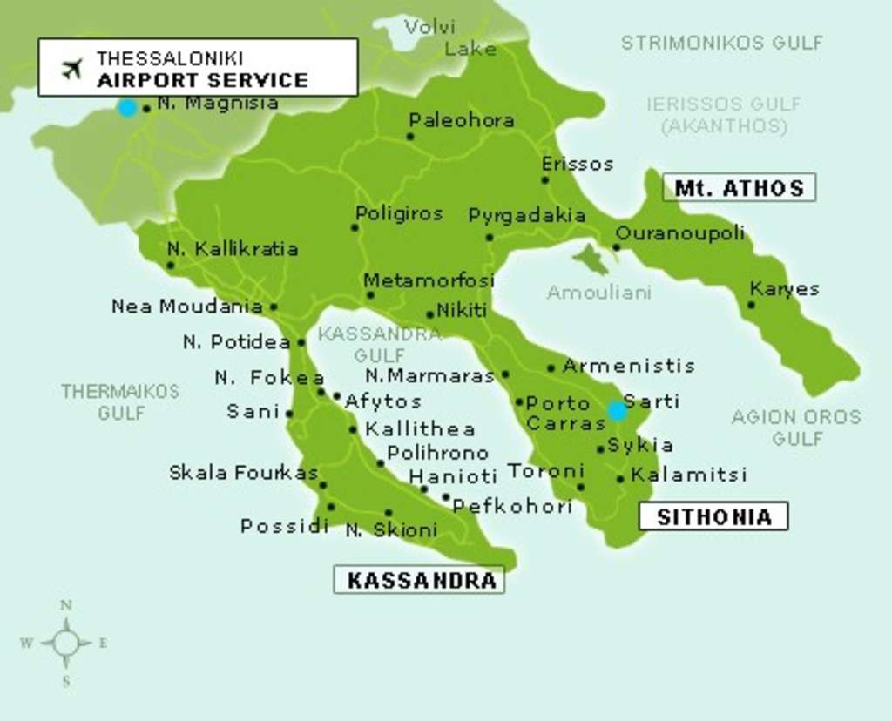
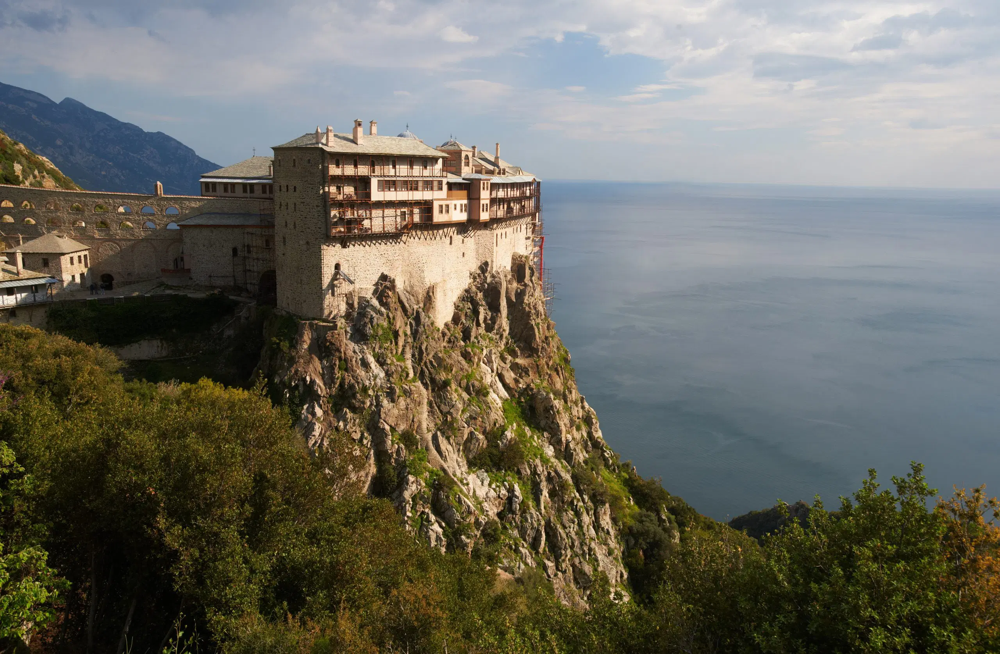

Map
Halkidiki is a region in northern Greece that is known for its blue flag beaches, local food, and an extremely large resort in Sani Beach.
The region is home to three peninsulas, each with its own unique character and attractions.
One of which, is home to Mount Athos, a mountain and peninsula in northeastern Greece, of which I will go into more detail below!
Some of the most popular beaches in the region include Sani Beach, Kallithea Beach, and Vourvourou Beach.

Mount Athos
Mount Athos is a mountain and peninsula in northeastern Greece and an important center of Eastern Orthodoxy.
It is home to 20 Eastern Orthodox monasteries and forms an autonomous state under Greek sovereignty.
The peninsula, the easternmost of the three peninsulas of Halkidiki, is also known as the Holy Mountain due to its historic monastic community.
In order to get to the monasteries, you must hike up the mountain. A trip not for many. It takes about 10 and a half hours to complete. Before you can
even start the hike, you must get a permit from the government. The permit is free, but only 100 are given out per day. On top of that, only men are
allowed to enter the territory. Myself along with my brothers have done it once. It was quite brutal, and honestly I didn't really want to go up for
religious purposes, but more for the experience. It was a once in a lifetime opportunity, and I am glad I did it.